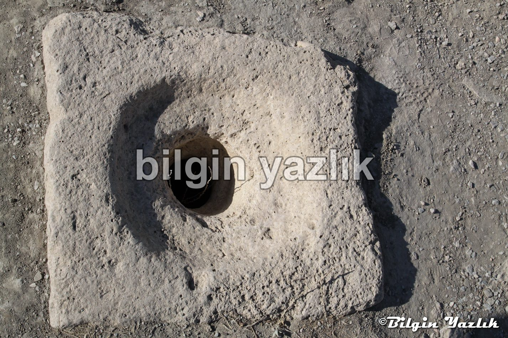
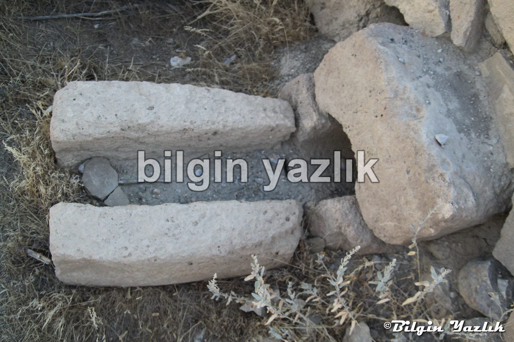
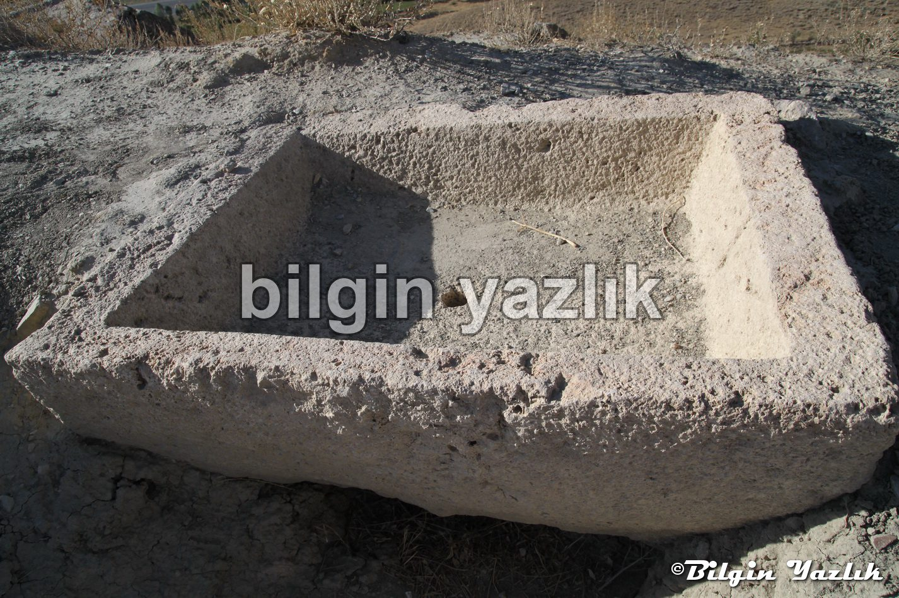
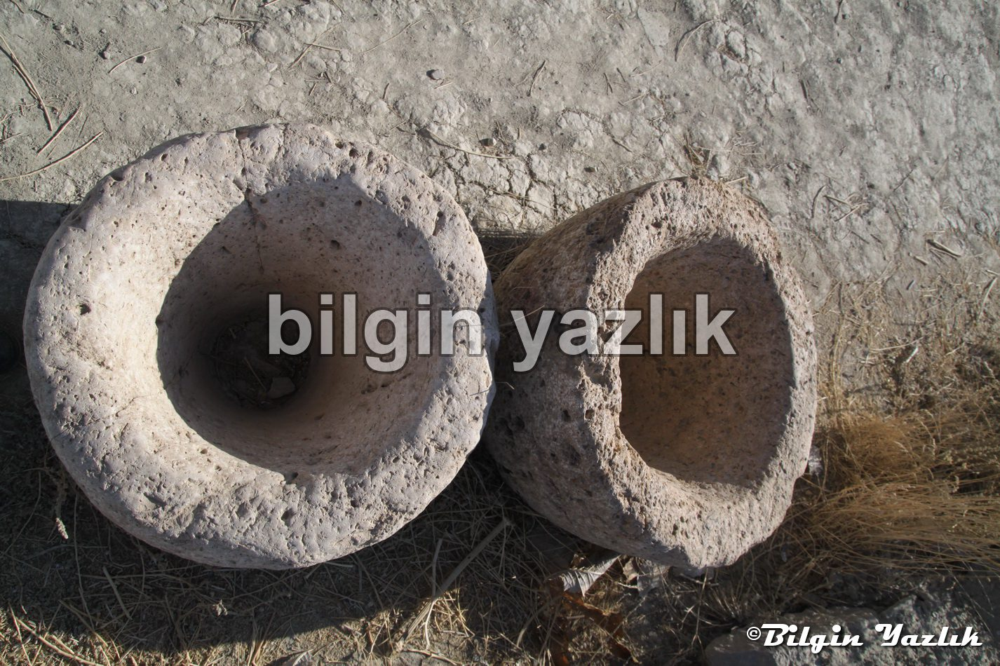
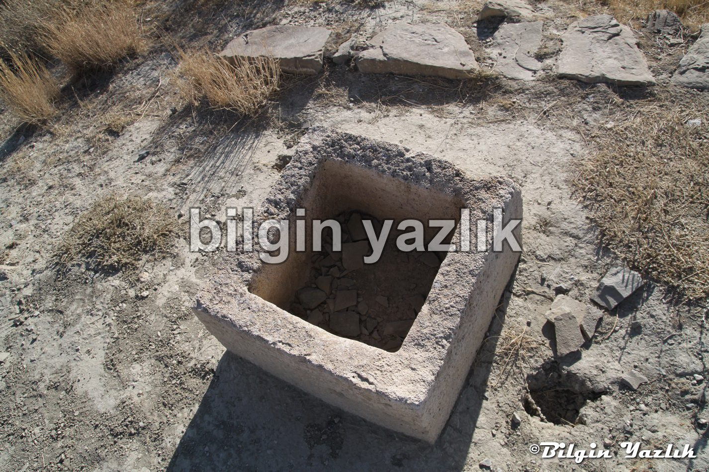
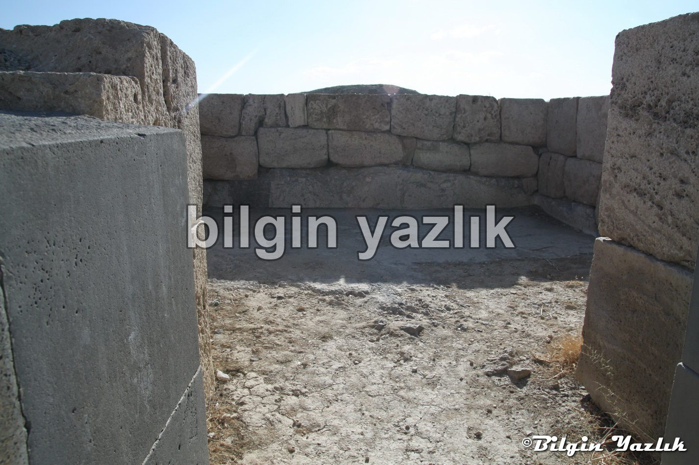
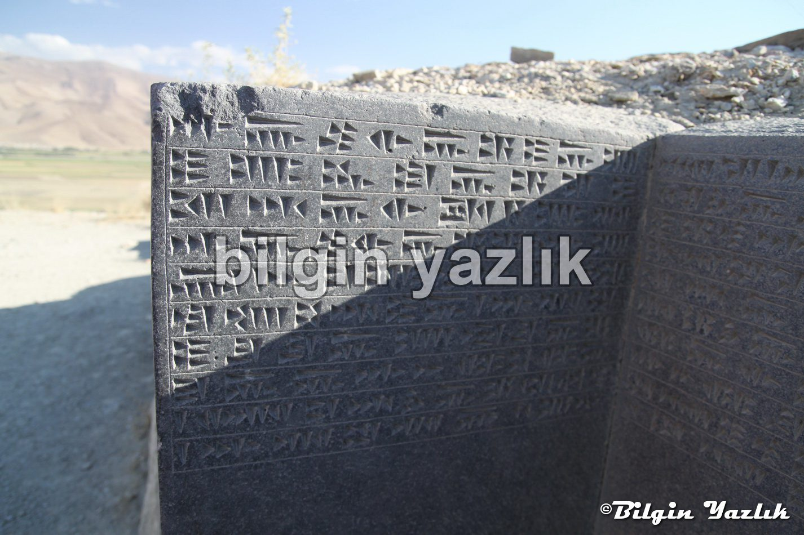
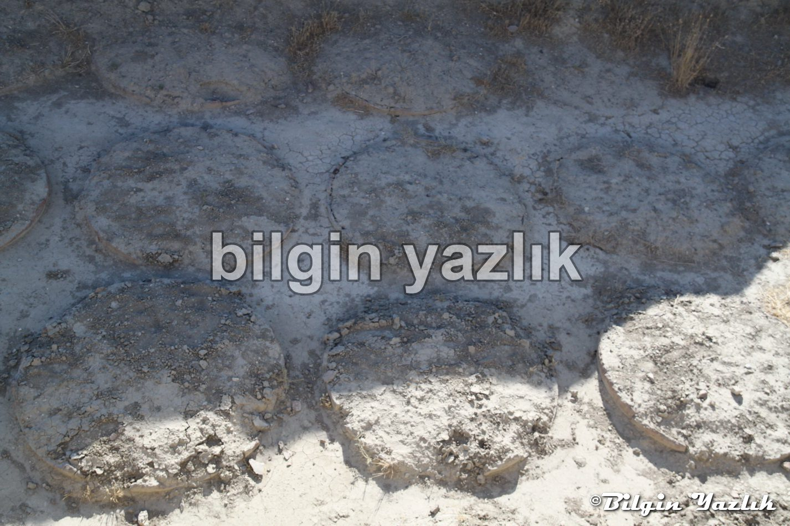
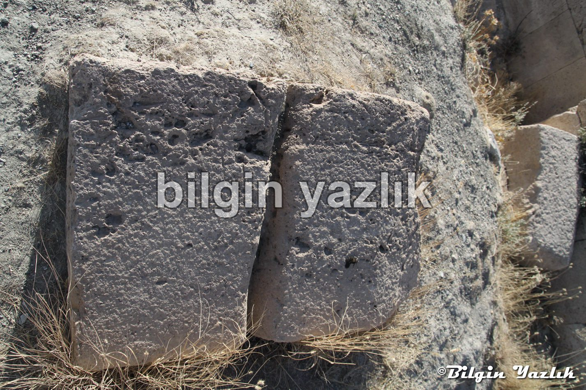
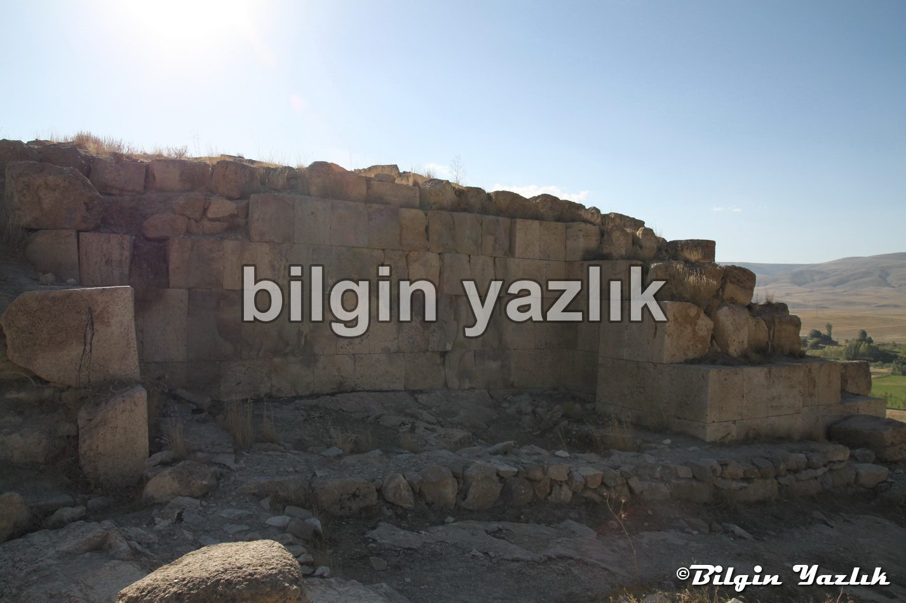

Van Gölü Havzası · 29 Ekim 2014
Çavuştepe Kalesi
Van – Hakkari karayolu üzerinde yer alan bir Urartu kalesidir.
Kazı çalışmaları henüz ilk aşamadadır ve ciddi manada büyük bir yerleşke olduğu bu aşamadan dahi görülmektedir.
Üzeri toprakla kaplı 20 civarında hububat deposu olduğunu tahmin ettiğim büyük silolar gömülü olarak duruyor.
Bekçisi Mehmet Kuşman, Urartuca biliyor, çocukluğunda kale kazılarına katılmış, merakla Urartucayı öğrenmiş.
Dileyenlere özel siyah taşlar üstüne kazıyarak isim vb şeyler yazıyor.
Kalede yeni çalışmalar başlatılmış, Gürpınar ovasına bakan kale mükemmel bir arkeolojik kazı alanı.










Bu yazı taliyol arşivinden taşınmıştır. · özgün kayıt